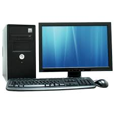

COMPUTER SCIENCE ENGINEERING
Computer science engineering (CSE) is one of the popular courses among engineering aspirants which focuses on the basic elements of computer programming and networking. Students pursuing computer science courses will gain knowledge of design, implementation and management of information system of both hardware and software. Going by the name, CSE course deals primarily with the theory of computation and design of computational systems. The course is offered across the globe in technical institutions at undergraduate as well as postgraduate levels awarding B.Tech and M.tech degrees, respectively.
ELIGIBILITY CRITERIA
For UG: The candidate should have passed 10+2 examination from CBSE or any other equivalent examination board with Physics, Chemistry and Mathematics as core subjects. The candidates should also fulfil minimum qualifying marks in aggregate of the subjects.
For PG: The candidate should have a B.Tech degree with a minimum passing percentage in aggregate of the subjects studied at the degree level.
SCOPE OF COMPUTER SCIENCE ENGINEERING
The present and future world can’t live without technology and the boom in the technology sector will lead to lucrative opportunities.
Increasing number of software companies and IT hubs like ‘Silicon Valley’ indicate an increasing demand for CSE experts.
Concepts like ‘cloud computing’ upon which future technologies will be based need specialists in this domain.
COURSE SUBJECTS
Cloud Computing Compiler Design Computer architecture and organization Computer Networks Data Base Management Systems Data Structures & Algorithms Design and Analysis of Algorithms Distributed Computing Systems Operating Systems (Unix Programming) Software Testing
Other Details
Introduction to Computing Course
This class offers students a basic introduction to technical concepts at work in computer technology. Students analyze the function of computer structures and complex logic structures, as well as implementation of memory databases. The course covers essential computer concepts and terminology such as RAM, GB and RAMBUS Memory.
Information Systems Topics Course
Students gain an introduction to Windows operating systems, as well as desktop productivity operating system applications. Students learn basic concepts in spreadsheet, word processing and network authoring software. The course introduces students to various backup schematics, Web publishing and network applications, such as HTTP, SSH and FTP.

Database Management Course
This course provides students with a complete overview of computer database applications from simple desktop platforms to Web-based servers. Students explore the fundamentals of database design and languages, along with techniques for implementing database systems. Topics covered include design-sophisticated tables, customized formats, input forms that use conditional formatting, database automation and ActiveX.
Data Structures and Programming Course
Students design and analyze data structures for a variety of server and Web applications that utilize object-oriented and rational database programming languages in this course. Topics cover a variety of data sorting structures such as queues, stacks, trees, lists and graphs. Students design data-structures and learn to analyze and apply programming principles to solve basic computing and information processing problems.
Programming Languages Course
This course offers students an introduction to a variety of programming languages and their applications. Students discuss common database structure types, problems and languages used to code appropriate types of information. Typical languages covered include C++, ML, Lisp, Prolog and Scheme. Students gain experience designing and writing programs in a selected set of languages.